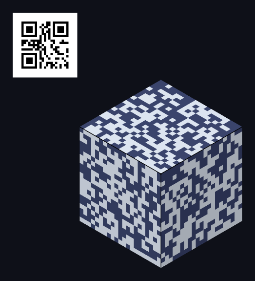
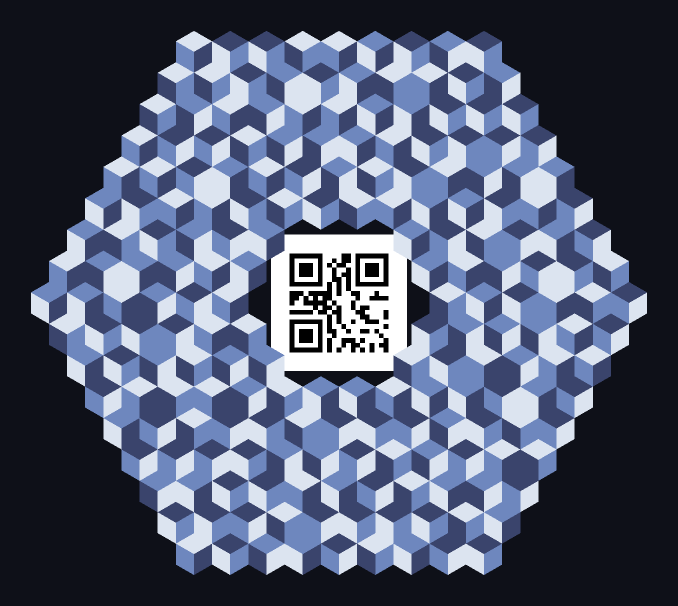
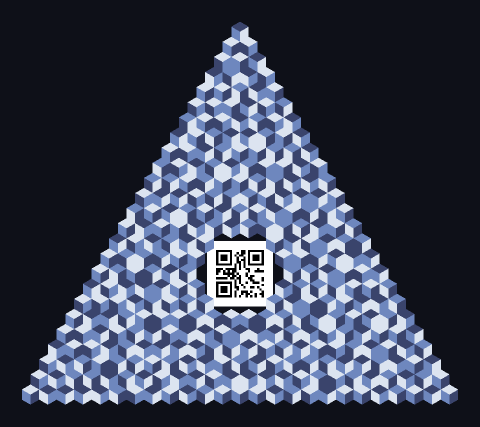

육각 셀 하나를 마름모 3면으로 나누고, 세 면의 상대 휘도 순서(3! = 6가지)를 심볼 하나로 씁니다. 절대값이 아니라 순서라서 인쇄 톤 커브나 조명이 흔들려도 순서만 지켜지면 값이 살아남고 — 그렇게 그리면 아이소메트릭 큐브가 됩니다.
같은 데이터 계약을 공유하고 실루엣만 다릅니다. 아래 코드에는 전부 https://tl.estre.so 가 들어 있어요.

세 면이 각각 n×n 격자. 한 덩어리라 간판·굿즈에 어울립니다.

가장 기본형. 중앙 파인더를 중심으로 마름모 셀이 깔립니다.

육각 코어에 코너 패치를 더해 정삼각형이 됩니다.
순 페이로드는 ECC-M 기준이에요. 세 타입 모두 폴백 QR 을 함께 인쇄할 수 있어서, TL 코드를 못 읽는 환경에서도 최소한의 경로가 남습니다.
육각 셀을 rhombille 타일링으로 T·L·R 세 면으로 나눕니다.
세 면의 휘도에 순위를 매기면 3! = 6가지 — base-6 digit 하나입니다.
GF(211) 소수체 위의 Reed–Solomon 으로 오류를 정정합니다.
단조 변환에 불변합니다. 전역 조명 변화·감마·프린터 톤 매핑처럼 단조 증가하는 톤 변형은 순서를 바꾸지 못합니다. 순서만 보존되면 값이 삽니다.
렌더러가 자유롭습니다. 데이터 계약이 "면 사이의 순서 + 최소 분리폭" 뿐이라, 그 안에서 색·질감·면 그라데이션·애니메이션이 전부 열려 있습니다. 그 자유도가 이 포맷의 핵심이에요.
대신 밀도는 포기했습니다. 마름모 셀은 정사각 모듈보다 면적 효율이 불리합니다. 이 포맷은 밀도 경쟁을 하지 않아요. QR 을 대체하려는 게 아니라 옆자리를 하나 만드는 겁니다.
포맷 스펙과 레퍼런스 구현은 Apache License 2.0 으로 공개돼 있습니다. 바닐라 JavaScript, 빌드 툴체인 없음, 런타임 의존성 0 — 단일 HTML 파일로 동작합니다.
디코더만 구현해도 적합 구현입니다. 확산은 읽는 쪽부터 시작하니까요.
| 사이트 | 역할 | 상태 |
|---|---|---|
| tlcube.estre.so | 생성기 | 동작 |
| tlscan.estre.so | 스캐너 | 준비 중 |
| tl.estre.so | 소개 허브 | 여기 |